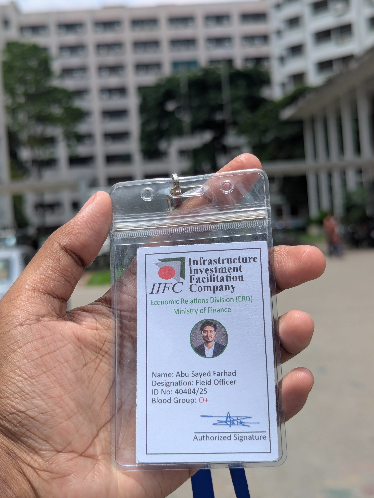
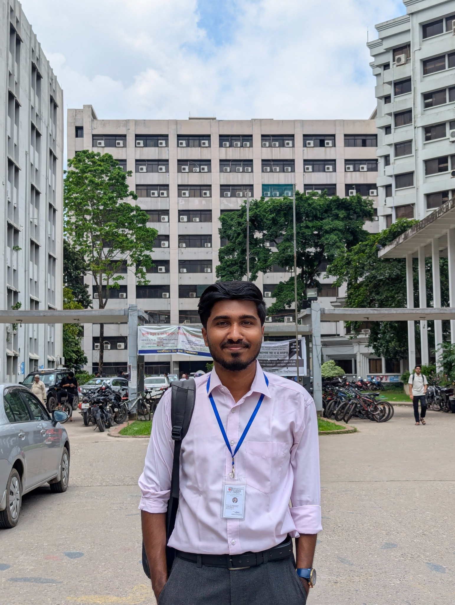

IIFC-ERD, Ministry of Finance
Field Officer (Project-Based)
Development of Scientific Inventory for Bangladesh and Identify Challenges and Opportunities
Project role
Collected information from academic and institutional departments at the University of Dhaka and coordinated with departmental contacts to support project data collection.
Project details
The project focused on developing a scientific inventory for Bangladesh and identifying related challenges and opportunities. As a Field Officer, I supported the data-collection process at the University of Dhaka by gathering information from academic and institutional departments and coordinating with departmental contacts. The experience strengthened my skills in institutional data collection, communication, coordination, and field-based research support.

IIFC-ERD ID card

IIFC-ERD field officer portrait